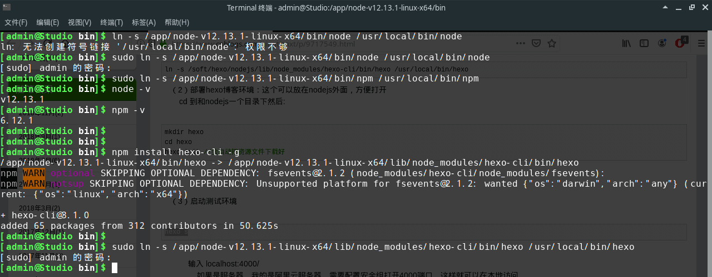

背景
因为最近穷成负翁，没钱给主机续费，个人网站关闭了一段时间。原本想用路由器的DDNS做内网渗透，这需要卡片电脑打造一台功率低7×24在线的低功率主机，虽有成就感但总感觉绕了很远的弯路。回想曾经用过的gitpages，感觉基本能满足我目前的需求，决定先采用hexo搭建，需要用到动态编程的时候，用跨域的ajax实现就好。我的Linux系统环境是manjaro-xfce-18.0.4-stable-x86_64，这篇文章主要是记录Linux(manjaro/archlinux)下nodejs(npm) + hexo环境搭建。
用pacman直接安装nodejs环境依赖。
1 | sudo pacman -S nodejs npm |
2 | #虽能顺利安装，但命令行键入node -v或npm -v时总是报错： |
3 | node: symbol lookup error: node: undefined symbol: nghttp2_option_set_max_outbound_ack |
详见
查阅资料说是编译的问题，而我不懂编译，只能放弃此道。
nodejs.org网站下载Linux Binaries (x64)包
打开链接https://nodejs.org/en/download/
下载Linux Binaries (x64)
本地解压后，复制到你的安装目录(比如/usr/local/或/app/)
注意：如果选择安装目录非 /usr/local/，则以后但凡npm全局安装某个应用包时npm install -g，均须建立软链接到 /usr/local/，否则终端将无法使用对应的命令。
然后建立node与npm的软链接
命令行操作如下
1 | wget https://nodejs.org/dist/v12.14.0/node-v12.14.0-linux-x64.tar.xz #下载 |
2 | tar xf node-v12.14.0-linux-x64.tar.xz #解压 |
3 | sudo mv node-v10.16.0-linux-x64 /app/node-v10.16.0-linux-x64 #移动 |
4 | sudo ln -s /app/node-v12.13.1-linux-x64/bin/node /usr/local/bin/node #建立软链接 |
5 | sudo ln -s /app/node-v12.13.1-linux-x64/bin/npm /usr/local/bin/npm |
命令行键入node -v或npm -v会出现版本号说明nodejs环境搭建成功。
安装hexo
1 | #在完成了nodejs环境搭建后，npm安装hexo并为其建立软链接即可。 |
2 | npm install hexo-cli -g |
3 | sudo ln -s /app/node-v12.13.1-linux-x64/lib/node_modules/hexo-cli/bin/hexo /usr/local/bin/hexo |

初始化hexo
1 | # 初始化一个hexo项目，比如blog |
2 | hexo init blog |
3 | # 启动hexo服务 |
4 | cd blog |
5 | hexo s |
浏览器打开
至此，hexo环境搭建完成。